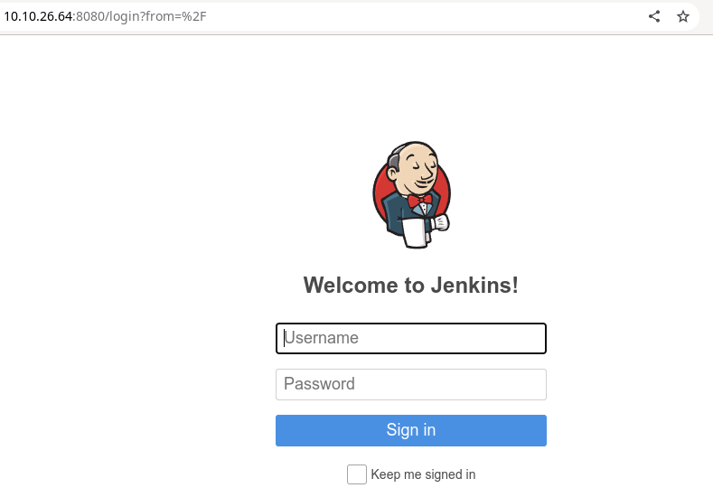

rustscan -b --ulimit 5000 -a 10.10.26.64 -r 1-65535 -- -A -sC
There are 3 open ports.
We can access port 80
But there is nothing we can do here.
But in the scan result we know that port 8080 is opened.

Then we can access
http://ip-address:8080
There is jenkins page here !

Then if we try username and password admin. We can login into the dashboard page.